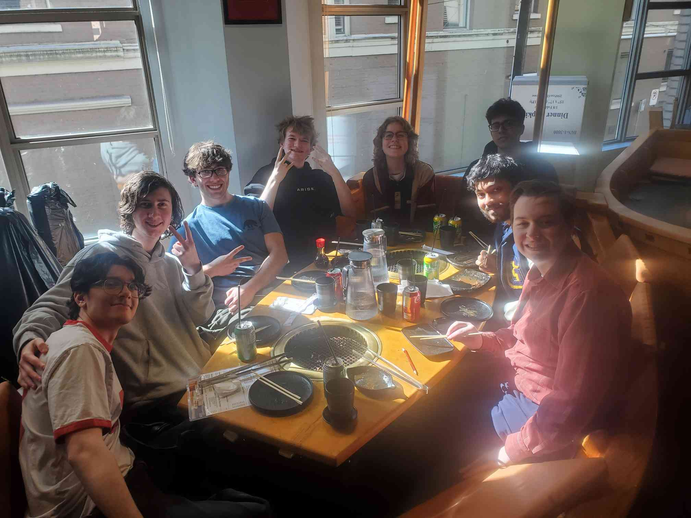
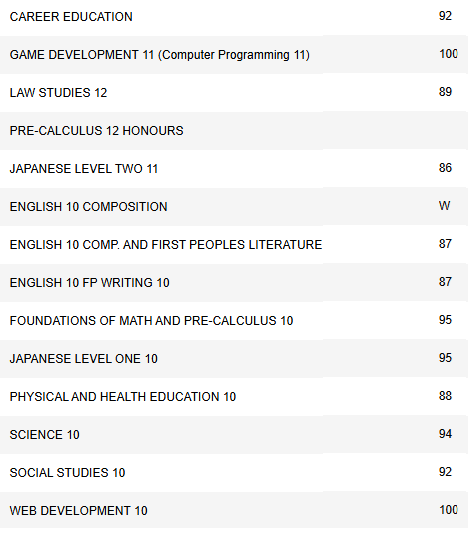
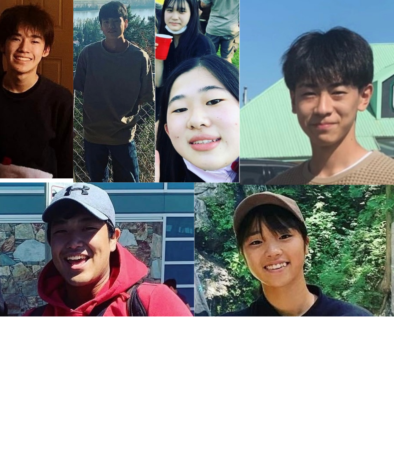
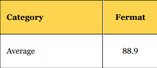
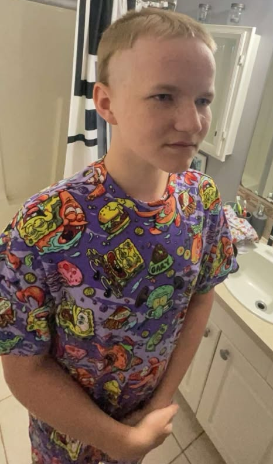

English 11: Moments That Shaped My Life

I had a falling out with my friend group, this left me sad and alone for a while.
After realizing my life wouldn’t change unless I made that change myself, I started talking
more and hanging out with kids in my math class. Being more of an extroverted person
helped me obtain a great group of friends I wouldn’t have had without that push.
I could use my gained ability to make friends in the future when my current friends graduate,
and I need to meet more people.

In the 9th grade no one believed in my capabilities to be able to go to school and get a good grade.
Pushing past my previous perceptions, I was able to go to school 99% of the time and I have a current 4.0 GPA.
In the future being able to push myself to do uncomfortable things I’ll be a much stronger person.

I have had many Japanese exchange students live in my house. This experience of different
cultures, languages, and people heavily influenced me to be able to accept different people easily.
Using this skill I’m able to be much more approachable and judge someone based off
their actions instead of appearance.
The beginning of the year I had no friends in my math class since I was a year younger.
After talking more to the people around me I was not only able to talk to my peer, but also,
I was able to make lasting friendships. If I’m in another situation in my life where
I’m thrown into an unfamiliar class I’ll be able to communicate and create friendships
with the people around me.
When I was in grade 10, I decided to take math 11 over the summer. Being able to spend my personal
time to focus on studying, homework, and tests pushed me to be a stronger person. I take the skills
I learned from pushing myself to be able to get my homework finished in time and study while
I’m home instead of being easily distracted.

Spending lunches in math class studying for the Fermat math contest was a huge testament of commitment.
Fully committing to something in life increased my grit and motivation for many other tasks in life like
the AP exam in May. Being able to commit to the math contest worked out and I was able to get
93 points which was above average.

Being a long greasy haired boy did not help me make friends. Being able to see that I was unhappy
like that in life I was able to cut my hair which gave me a boost of confidence, made more friends,
and happier in life. Now I'm able to make big decisions about my life is a useful skill that can
be brought to many different situations.